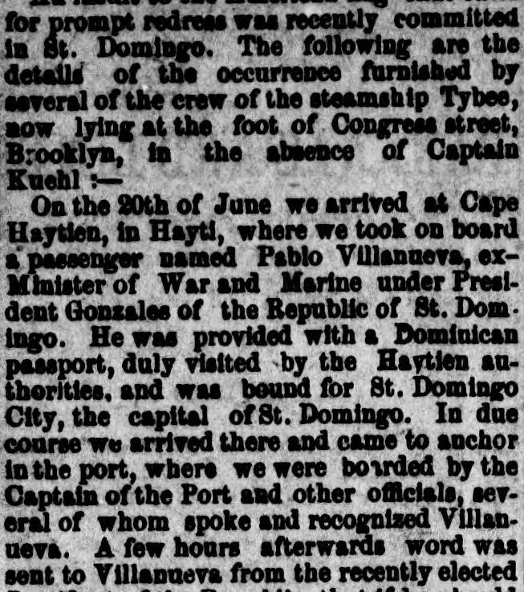
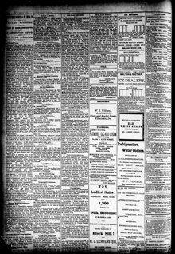

Detail of the occurrence furnished by several of the crew of the steamship TybeeDetalle de lo ocurrido, suministrado por varios miembros de la tripulación de
The Morning Herald. Wilmington, Del., July 10, 1876. Page 4. Published by O'Byrne Bros. A daily newspaper, 1875–1880.The Morning Herald. Wilmington, Del., 10 de julio de 1876. Página 4. Publicado por O'Byrne Bros. Periódico diario, 1875–1880. View the originalVer el original


See the full pageVer la página completaAccording to the Morning Herald of July 10, 1876, crew members of the steamship Tybee reported that Pablo Villanueva, ex-Minister of War and Marine under Dominican President Gonzales, boarded the vessel at Cape Haytien with a valid Dominican passport and arrived at St. Domingo City. Upon arrival, Villanueva was warned that the newly elected President would order his arrest if he came ashore, prompting Villanueva to summon American Consul Mr. Paul Jones to state that his only intentions were to reunite with his family, collect a debt of $5,000, and depart for New York without causing political strife. Following this conversation, Consul Jones went ashore.Según el Morning Herald del 10 de julio de 1876, tripulantes del vapor Tybee informaron que Pablo Villanueva, exministro de Guerra y Marina del presidente dominicano González, embarcó en Cap-Haïtien con pasaporte dominicano en regla y llegó a la ciudad de Santo Domingo. A su arribo, se advirtió a Villanueva que el recién electo presidente ordenaría su detención si bajaba a tierra, lo que indujo a Villanueva a llamar al cónsul estadounidense, Sr. Paul Jones, para manifestarle que su único propósito era reunirse con su familia, cobrar una acreencia de 5.000 dólares y viajar a Nueva York sin provocar disturbios políticos. Concluida la conversación, el cónsul Jones marchó a tierra.
FULL TEXT:TEXTO COMPLETO:
OUR FLAG INSULTEDNUESTRA BANDERA INSULTADA
The Steamship Tybee Boarded by Dominican Troops—Forcible Removal of One of Her Passengers.El vapor Tybee abordado por tropas dominicanas—Remoción forzosa de uno de sus pasajeros.
An insult to the American flag that calls for prompt redress was recently committed in St. Domingo. The following are the details of the occurrence furnished by several of the crew of the steamship Tybee, now lying at the foot of Congress street, Brooklyn, in the absence of Captain Kuehl:—Un insulto a la bandera estadounidense que demanda pronta reparación fue recientemente cometido en Santo Domingo. Los siguientes son los detalles del acontecimiento proporcionados por varios de la tripulación del vapor Tybee, ahora anclado al pie de la calle Congress, Brooklyn, en ausencia del capitán Kuehl:—
On the 20th of June we arrived at Cape Haytien, in Hayti, where we took on board a passenger named Pablo Villanueva, ex-Minister of War and Marine under President Gonzales of the Republic of St. Domingo. He was provided with a Dominican passport, duly visited by the Haytien authorities, and was bound for St. Domingo City, the capital of St. Domingo. In due course we arrived there and came to anchor in the port, where we were boarded by the Captain of the Port and other officials, several of whom spoke and recognized Villanueva. A few hours afterwards word was sent to Villanueva from the recently elected President of the Republic that if he should come ashore he would be arrested. Villanueva, feeling safe under the protection, sent for the American Consul, Mr. Paul Jones, and told him in English, which he speaks very fluently, that he came to St. Domingo City to see his wife and child, as all the letters he wrote to them had been intercepted, and that he intended to take them away to New York, where he was going to reside for the future. He also said he came to claim some $5,000 due to him from different people, and, in conclusion, that he had no desire to cause any new political strife, his errand being simply as above stated.—After learning this the Consul left the Tybee and was rowed ashore.El 20 de junio llegamos a Cabo Haitiano, en Haití, donde tomamos a bordo un pasajero llamado Pablo Villanueva, ex Ministro de Guerra y Marina bajo el presidente Gonzales de la República de Santo Domingo. Estaba provisto de un pasaporte dominicano, debidamente visado por las autoridades haitianas, y se dirigía a la ciudad de Santo Domingo, la capital de Santo Domingo. A su debido tiempo llegamos allí y anclamos en el puerto, donde fuimos abordados por el Capitán del Puerto y otros funcionarios, varios de los cuales hablaron y reconocieron a Villanueva. Unas pocas horas después se envió palabra a Villanueva del Presidente de la República recientemente elegido de que si bajaba a tierra sería arrestado. Villanueva, sintiéndose seguro bajo la protección, mandó a buscar al Cónsul estadounidense, el Sr. Paul Jones, y le dijo en inglés, que habla muy fluentemente, que vino a la ciudad de Santo Domingo a ver a su esposa e hijo, pues todas las cartas que les escribió habían sido interceptadas, y que se proponía llevárselos a Nueva York, donde iba a residir en el futuro. También dijo que vino a reclamar unos $5,000 que le debían diferentes personas, y, en conclusión, que no tenía deseo de causar nueva contienda política, siendo su diligencia simplemente como se ha afirmado arriba.—Después de saber esto el Cónsul salió del Tybee y fue remado a tierra.
This collection gathers the coverage of the Dominican Republic in the American press, in the order it was published.Esta colección reúne la cobertura de la República Dominicana en la prensa estadounidense, en el orden en que se publicaron.